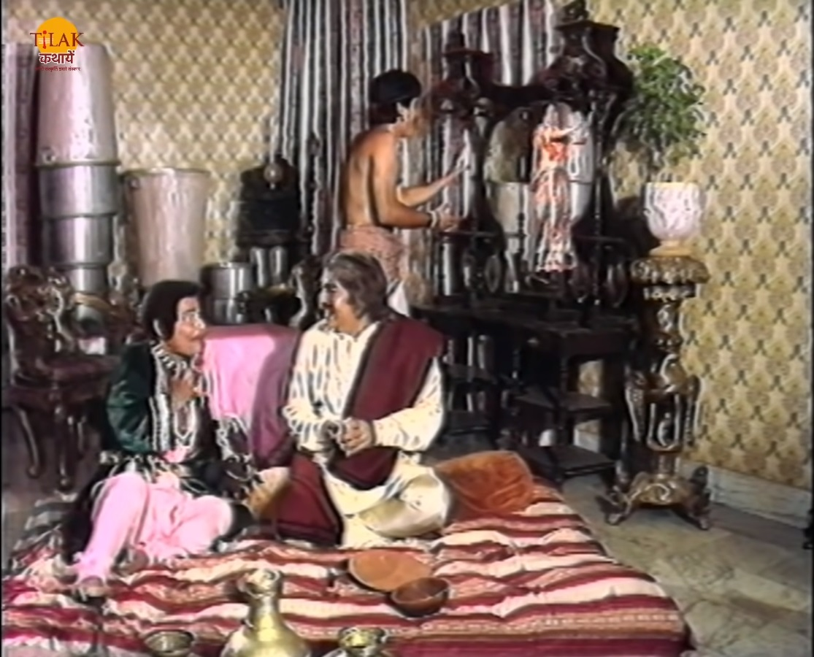
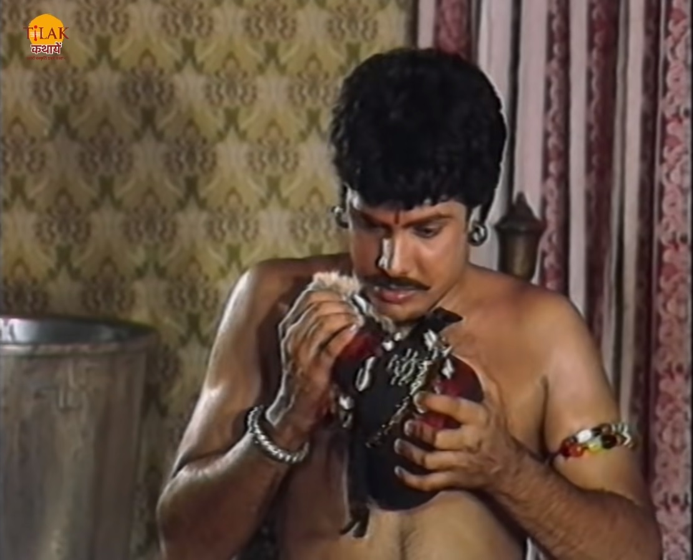
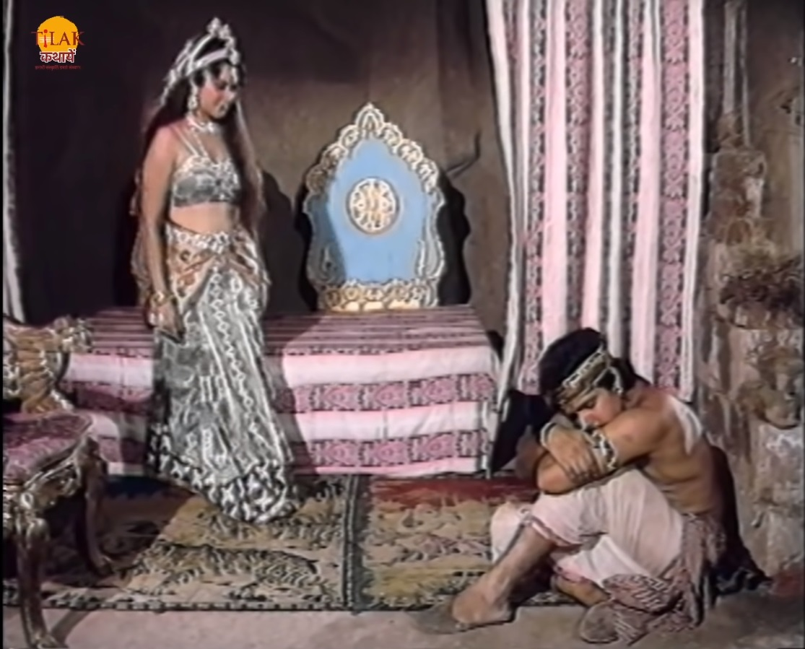
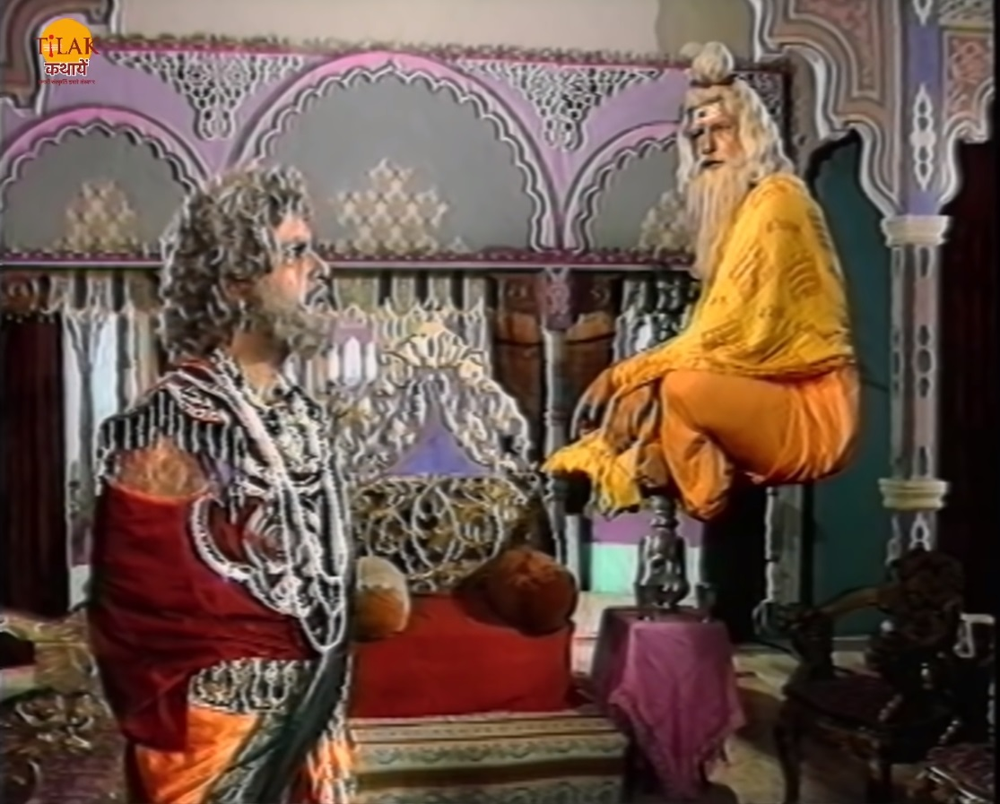

|  |  |
विक्रम बेताल को फिर से पकड़ कर ले चलता है और बेताल फिर से उसे एक कहानी सुनता है। गोरखपुर का एक जादूगर अभिजीत एक धनी यशवंत दुबे से मिलने आता है और उसे सोने का लालच देकर उसकी बेटी नंदनी को पाना चाहता था। जादूगर व्यापारी के सारे पुराने बर्तनों को सोने के बर्तनों में बदल देने वाली एक मणि देता है जिसके लालच में आकर व्यापारी अपनी बेटी नंदनी को उसको देने का वादा कर देता है तभी वहाँ एक लकड़हारा सुकेश आता है जो नंदनी का प्रेमी था वो व्यापारी को कहता है की नंदनी मुझसे प्रेम करती है और वो उसे किसी ओर को नहीं सोंप सकता। जादूगर अपनी जादुई गुड़िया से नंदनी को शीशे में क़ैद कर देता है। सुकेश जादूगर की गुड़िया को उस से छिन लेता है और गुड़िया का गला दबा कर जादूगर को मार देता है। सुकेश जादूगर की किताब लेकर चला जाता है और नंदनी को आज़ाद करने का उपाय उस किताब में खोज लेता है। सुकेश उस किताब के अनुसार एक गुफा में जाता है तो वहाँ उसे एक स्त्री मिलती है वो उसे सोम रस पिलाती है और अपने प्रेम के जाल में फँसाने की कोशिश करती है लेकिन सुकेश उसके जाल में नहीं फँसता। वह स्त्री सुकेश के प्रेम को देख कर प्रसन्न हो जाती है और उसे कैलाश फूल दे देती है। सुकेश उस फूल को वापस लेकर आता है और नंदनी को शीशे की दुनिया से आज़ाद कर देता है।सुकेश और नंदनी वहाँ से चले जाते हैं और शादी की तैयारी करते हैं तो सुकेश अपनी माँ से विवाह की आज्ञा लेने के लिए महानगर चला जाता है।
|  |  |
उस राज्य के राजा को एक साधु दर्शन देते हैं और उसे कहते हैं की राजा तूने अपने देश के लिए अपने चारों पुत्र बलिदान कर दिए और स्वयं के अंग भी इस राज्य की रक्षा में युद्ध में गवा दिए हैं हम तुम्हारी इस निष्ठा से प्रसन्न हैं। साधु राजा को कहते हैं की आज उसका बहविश्य बदलने वाला है आज उसे एक सुंदर कन्या मिलगे यादि उसका विवाह राजा के साथ हो जाए तो जो पुत्र जनम लेगा वो उसे उसके सारे राज्य वापस दिला सकता है। राजा मंदिर जाता है तो उसे वहाँ नंदनी मिलती है राजा उस से उसका पता पूछता है और मिलने के लिए आने की बात करता है। नंदनी उसे अपने गहर का पता बता देती है और चली जाती है। रास्ते में उसे नगर सेठ मिलता है और वो भी उस से मिलने की बात करता है तो वो उसे भी घर का पता बता देती है। नगर सेठ भी नंदनी से मिलने आना की बात करता है। रास्ते में उसे मंत्री रोक लेता है और उससे मिलने की बात करता है तो नंदनी उसे भी परसों आने के लिए कह कर चलीयो जाती है। ऐसे ही उसे प्रधानमंत्री मिलता है वो भी उस से मिलने के बात करता है तो नंदनी उसे भी परसों शाम को बुला लेती है। तीनों आदमियों नगर सेठ, मंत्री और प्रधान मंत्री ने सुकेश को अपने रास्ते से हटाने के लिए अपने आदमियों को उसके पीछे लगा देते हैं।
उनमे से एक आदमी का भेजा हुआ जादूगर उसे मंत्र विद्या से ज़ंजीरों में बांध देता है। राजा अपने समय पर आ जाता है और उसके आते ही कुछ देर बाद नगर सेठ आ जाता है तो नंदनी राजा को छिपा देती है। नगर सेठ अंदर आता है और नंदनी को अपना बनाने की बात करता है तभी दरवाज़े पर दस्तक होती है और मंत्री भी वहाँ आ जाता है। नंदनी नगर सेठ को भी छिपा देती है। मंत्री अंदर आकर नंदनी से कहता है की वो उस से शादी करना चाहता है तभी दरवाज़े पर प्रधानमंत्री आ जाता है नंदनी मंत्री को भी छिपा देती है और प्रधानमंत्री भी अंदर आने के बाद नंदनी से रिश्ता बनाने की बात करता है। दरवाज़े पर फिर से दस्तक होती है और अंत में सुकेश आ जाता है। राजा यह सब छिप कर देख रहा था। सुकेश आकर नंदनी को बताता है की उसे किसी ने ज़ंजीरों में जकड़ दिया था उसे एक साधु बाबा ने मुकत्त कराया। नंदनी यह सुन कर सुकेश को कहती है की उसे भी बहुत बड़ी विपदा का सामना करना पड़ा रह है। नंदनी पहले नगर सेठ को बाहर निकलती है और कहती है की यह मुझसे शादी करना चाहता है तो सुकेश उसे कहता है की तुमने इसकी शिकायत मंत्री से क्यों नहीं की।
| Previous Story | Home | Next Story |